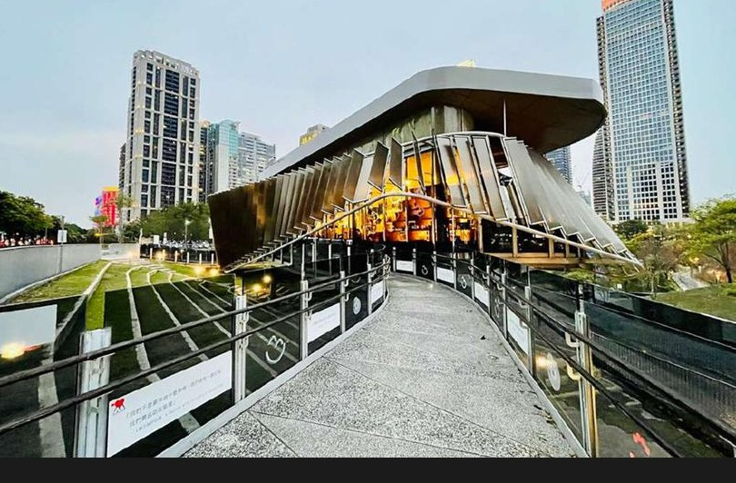

HJ Development Program · 2-Day Immersive Seminar
The Journey — From Service to Clienteling
Purpose — first we immerse, then we convert: empower 31 advisors to engage VICs as peers ahead of the HK Golf Tournament & HJ Caravan.
Day 1 · Immerse


Lifestyle Immersion
- Indoor golf etiquette with two resident coaches
- Art auction mastery — viewing to live bidding
- Fragrance & a Michelin dinner as social currency
Day 2 · Convert

Strategic Clienteling

- Workshop — translating lifestyle into client insight
- Art-therapy reflection & a guided city walk
- Consolidation into a concrete 2H retention plan
Outcome
Social FluencyPeer-level VIC conversation
Talking PointsArt, scent & lifestyle hooks
2H Action PlanPer-SA retention commitments
Proven LiveMock auction & scent blending